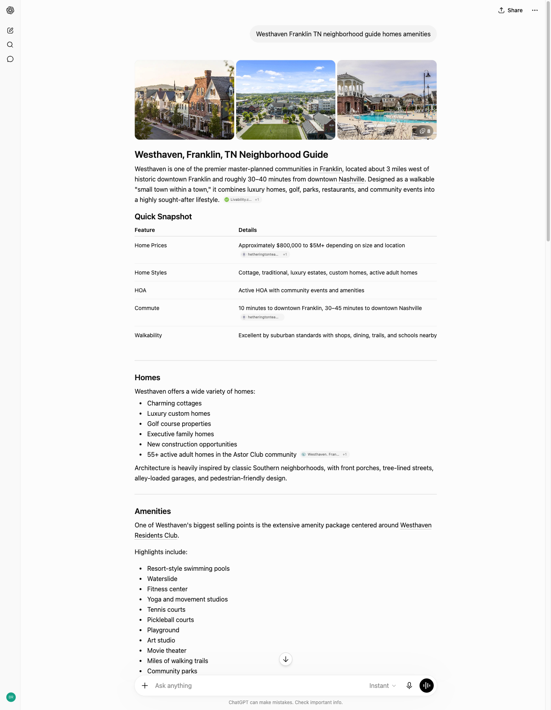
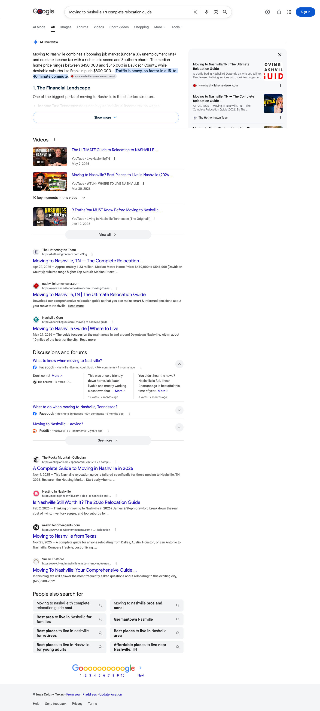
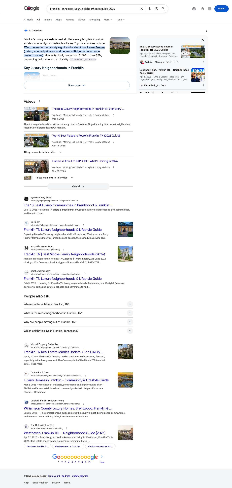
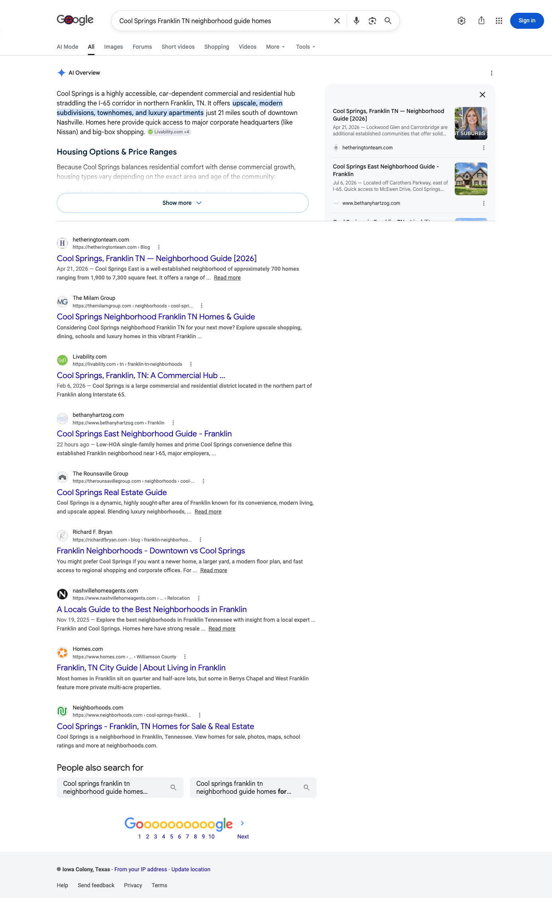

July 2026 | The Hetherington Team
Executive summary
In July, hetheringtonteam.com was named as a source on eleven of the twelve relocation and neighborhood questions we track. Only one question in the set is not yet cited anywhere.
Perplexity cites you on ten of the twelve and ChatGPT on nine. Between them they cite hetheringtonteam.com on questions spanning Westhaven, Cool Springs, Historic Downtown, The Grove and Nashville relocation. The record identifies the domain cited on each question, not which page the engine reached for.
Google’s AI Overview is the open front. In our July 6 reading, Google generated an Overview on eleven of the twelve questions and cited you on three. That gap between 11 Overviews and 3 citations is the single largest opportunity in this report.
One note on the tiles below: the clicks figure is your total Google organic Search clicks for the dates shown, across the whole site. It is there for context, not as a count of the visits these answers sent.
Citation matrix
✓ Cited: your site is among the sources that answer drew on
– Not cited in the reading for that column
◦ Google did not generate an AI Overview for this question, so there was no AI answer to be cited in
| Buyer question | Google AI Overview | Perplexity | ChatGPT | |
|---|---|---|---|---|
| Cool Springs Franklin TN best place to livehetheringtonteam.com | – | ✓ | ✓ | |
| Cool Springs Franklin TN neighborhood guide homeshetheringtonteam.com | ✓ | ✓ | ✓ | |
| Downtown Franklin TN homes walkable neighborhoodhetheringtonteam.com | – | ✓ | ✓ | |
| Franklin Tennessee luxury neighborhoods guide 2026hetheringtonteam.com | ✓ | ✓ | ✓ | |
| Historic Downtown Franklin TN living neighborhoodhetheringtonteam.com | – | ✓ | ✓ | |
| Living in Franklin TN neighborhoods schools luxury homeshetheringtonteam.com | – | ✓ | – | |
| Living in The Grove College Grove Tennesseehetheringtonteam.com | – | ✓ | ✓ | |
| Moving to Nashville TN complete relocation guidehetheringtonteam.com | ✓ | ✓ | – | |
| Moving to Nashville from California best neighborhoods | – | – | – | |
| The Grove College Grove Greg Norman golf homeshetheringtonteam.com | ◦ | ✓ | ✓ | |
| Westhaven Franklin TN neighborhood guide homes amenitieshetheringtonteam.com | – | ✓ | ✓ | |
| What is it like to live in Westhaven Franklin TNhetheringtonteam.com | – | – | ✓ |
Reading the matrix. Eleven of the twelve questions are cited on at least one engine. Perplexity carries ten and ChatGPT nine. The Google column is a single July 6 reading of each question: Google generated an AI Overview on eleven of the twelve and named you in three of those, which is where the August work concentrates. The one question no engine cites, moving to Nashville from California, is the clearest single target for August.
How to read the columns. Perplexity and ChatGPT were measured across the month. The Google AI Overview column is a single reading taken on July 6, and AI Overviews vary day to day, so treat that column as a snapshot rather than a month. That reading was also taken from a connection outside Middle Tennessee, and Google localizes these answers, so a search run from inside the market can return a different result. Every AI Overview was read as Google first rendered it, with collapsed source lists left unexpanded and side panels as displayed. So any list of sources named in this report is what Google showed first on that reading, not a complete inventory of everything the answer drew on.
Story one
Perplexity cites hetheringtonteam.com on ten of the twelve questions. It reaches for you on every Franklin neighborhood in the tracked set: Westhaven, Cool Springs, Historic Downtown and The Grove.
| Buyer question | Status | Owned domains cited on this question |
|---|---|---|
| Cool Springs Franklin TN best place to live | Cited | hetheringtonteam.com |
| Cool Springs Franklin TN neighborhood guide homes | Cited | hetheringtonteam.com |
| Downtown Franklin TN homes walkable neighborhood | Cited | hetheringtonteam.com |
| Franklin Tennessee luxury neighborhoods guide 2026 | Cited | hetheringtonteam.com |
| Historic Downtown Franklin TN living neighborhood | Cited | hetheringtonteam.com |
| Living in Franklin TN neighborhoods schools luxury homes | Cited | hetheringtonteam.com |
| Living in The Grove College Grove Tennessee | Cited | hetheringtonteam.com |
| Moving to Nashville TN complete relocation guide | Cited | hetheringtonteam.com |
| The Grove College Grove Greg Norman golf homes | Cited | hetheringtonteam.com |
| Westhaven Franklin TN neighborhood guide homes amenities | Cited | hetheringtonteam.com |
Story two
ChatGPT cites you on nine of the twelve. The community guides carry it, including The Grove golf query, where Google produced no AI Overview in our reading.
| Buyer question | Status | Owned domains cited on this question |
|---|---|---|
| Cool Springs Franklin TN best place to live | Cited | hetheringtonteam.com |
| Cool Springs Franklin TN neighborhood guide homes | Cited | hetheringtonteam.com |
| Downtown Franklin TN homes walkable neighborhood | Cited | hetheringtonteam.com |
| Franklin Tennessee luxury neighborhoods guide 2026 | Cited | hetheringtonteam.com |
| Historic Downtown Franklin TN living neighborhood | Cited | hetheringtonteam.com |
| Living in The Grove College Grove Tennessee | Cited | hetheringtonteam.com |
| The Grove College Grove Greg Norman golf homes | Cited | hetheringtonteam.com |
| Westhaven Franklin TN neighborhood guide homes amenities | Cited | hetheringtonteam.com |
| What is it like to live in Westhaven Franklin TN | Cited | hetheringtonteam.com |

Story three
In our July 6 reading, Google built an AI Overview on eleven of the twelve questions and named you on three. The Overviews are being written; the work is earning the source slot inside them.
Your Nashville relocation guide is carried as a named source inside Google’s AI Overview for the core relocation question in the tracked set. The rail card runs the guide’s own title with the attribution line The Hetherington Team beside your favicon.

Your Legends Ridge neighborhood guide is carried as a named source inside Google’s Overview for this query, and The Hetherington Team also appears as an inline source chip in the opening paragraph. Two separate attributions inside one answer.

Your Cool Springs guide takes the top card in Google’s source rail. Of the three Overview citations in that reading, this is the one where your bare domain, rather than the brand name, is the attribution.

Gaps as opportunities
You are close to saturated on the answer engines. The whole opportunity now sits in one place, which makes August unusually easy to prioritize.
Search Console shows the Historic Downtown guide crawled and not yet indexed. Google cannot select a page it has not indexed as a source, so no amount of copy work on that guide can win an Overview slot until this clears: request indexing and add internal links to it from the Franklin pillar. The McKays Mill and Berry Farms guides sit in the same state and are worth clearing in the same pass.
On eight of the eleven questions where Google builds an Overview, it cites someone else. Every one of those except the California relocation question in card 3 points at a neighborhood guide you have already published, so none of this is a writing job. Both downtown questions run to the Historic Downtown guide and wait on card 1, which leaves the Cool Springs, Living in Franklin, The Grove and Westhaven guides to retrofit now: rewrite the opening 80 words of each into a direct answer, add question-shaped H2s, and keep the dated title.
Moving to Nashville from California is the one question no engine cites you on, and Google is already writing an answer for it. The guide is published, so nothing here needs writing. Card 1’s rule applies to it as well, though, and this guide sits outside the set of URLs we have coverage data for, so step one is confirming in Search Console that Google has it indexed. Once that is confirmed, give it a direct answer in the opening lines and question-shaped headings. It is the cleanest place to test whether that treatment moves the source slot.
Video is showing up in Google’s source rail across these questions, and on several of the ones where you are not cited the video card belongs to a competing channel. Keep Lorene’s video and its VideoObject markup on each guide as it is retrofitted: that is how you contest a slot other channels are holding today.
Brentwood, Belle Meade and Green Hills are published and not yet in the tracked set. Adding them next month shows whether the same pattern holds outside the Franklin core. Fieldstone Farms, Ladd Park, Laurelbrooke and Legends Ridge are live and untracked as well, so nothing there needs writing, only measuring. McKays Mill and Berry Farms belong in that group too. Google has not indexed those two guides yet, so expect their Google column to read empty until card 1 clears, but that gate is Google’s alone: the answer engines still cite hetheringtonteam.com on both downtown questions this month while that guide sits unindexed.